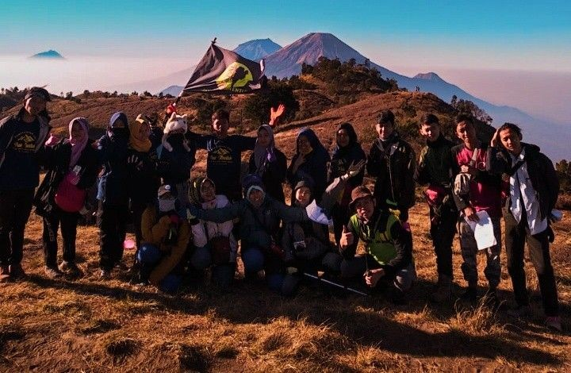

Trekking Mangrove: Ekosistem Pesisir
5 Oktober 2025
Gunung Prau, Dieng
Deskripsi Kegiatan
Trekking Mangrove: Ekosistem Pesisir adalah kegiatan eksplorasi
lingkungan yang bertujuan mengenalkan pentingnya hutan mangrove
sebagai benteng alami pesisir. Acara ini dirancang untuk memberikan
pengalaman langsung kepada peserta tentang bagaimana ekosistem
mangrove berperan menjaga garis pantai, menjadi rumah bagi berbagai
spesies, serta menyerap karbon. Lokasi kegiatan berada di kawasan
konservasi mangrove pesisir utara Jawa, yang masih alami dan kaya
keanekaragaman hayati.
Rangkaian kegiatan dimulai pada pagi hari dengan registrasi dan
pembukaan oleh fasilitator lingkungan, dilanjutkan dengan sesi
pengantar ekosistem mangrove dan pembekalan alat keselamatan.
Peserta kemudian melakukan trekking menyusuri jembatan kayu di
tengah hutan mangrove, sambil mempelajari jenis-jenis vegetasi
pesisir dan peran ekologisnya. Setelah istirahat makan siang,
kegiatan dilanjutkan dengan simulasi pemetaan area rawan abrasi
serta games edukatif bertema konservasi.
Menjelang malam, peserta mengikuti refleksi senja di tepi laut,
disusul dengan api unggun dan diskusi kelompok tentang aksi
lingkungan berkelanjutan. Keesokan paginya, acara ditutup dengan
penanaman bibit mangrove secara simbolis, sesi foto bersama, dan
pembagian sertifikat partisipasi. Trekking Mangrove bukan sekadar
kegiatan lapangan, tetapi ajakan untuk menyelami alam dan
menumbuhkan kepedulian terhadap bumi, dimulai dari pesisir.
Fasilitas
- Transportasi dari basecamp
- Logistik dan makanan
- Asuransi peserta
- Kaos & sertifikat
R.A.P Open Trips
- Kuota : 7 orang
- Guide : Sobat Zahid Saputra
- Biaya : 450k per-orang
- Kontak: +62 830 2345 6768
Dalam event ini R.A.P Outdoor membuka open trip yang akan dipandu langsung oleh pendaki profesional kami.